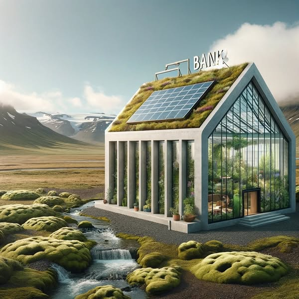

How Green Are Iceland's Banks?
Before choosing where to bank, Circa asked a simple question — and turned it into a public conversation about climate responsibility.

From Circa's Facebook channelAbout the project
Where you keep your money is a climate decision — even if it rarely feels like one. Circa set out to make that link visible.
Before deciding where to bank, we examined the environmental credentials of Iceland's three main banks — Arion Bank, Landsbankinn and Íslandsbanki — and shared what we found openly, turning a private, everyday choice into a public conversation about transparency and climate responsibility. This early initiative reflects a principle that runs through all of Circa's work: sustainability claims should be questioned, compared, and made useful to ordinary people.
What we did
- Compared the environmental credentials of Iceland's three main banks
- Reframed an everyday financial choice as a matter of climate responsibility
- Shared the findings openly to spark public discussion
- Put into practice Circa's commitment to scrutinising green claims